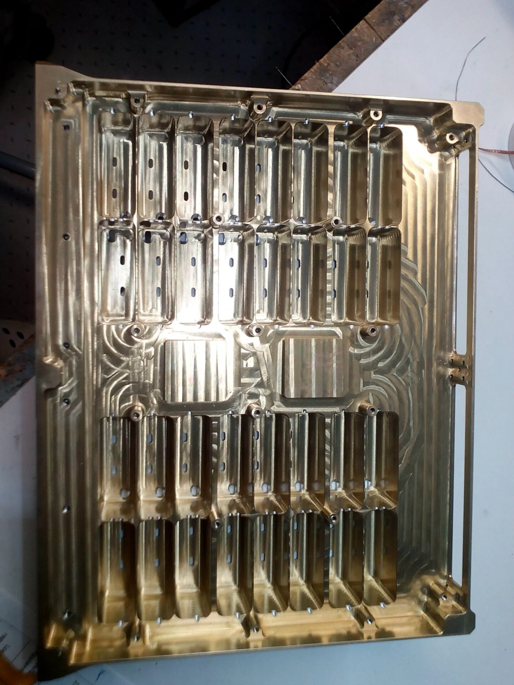
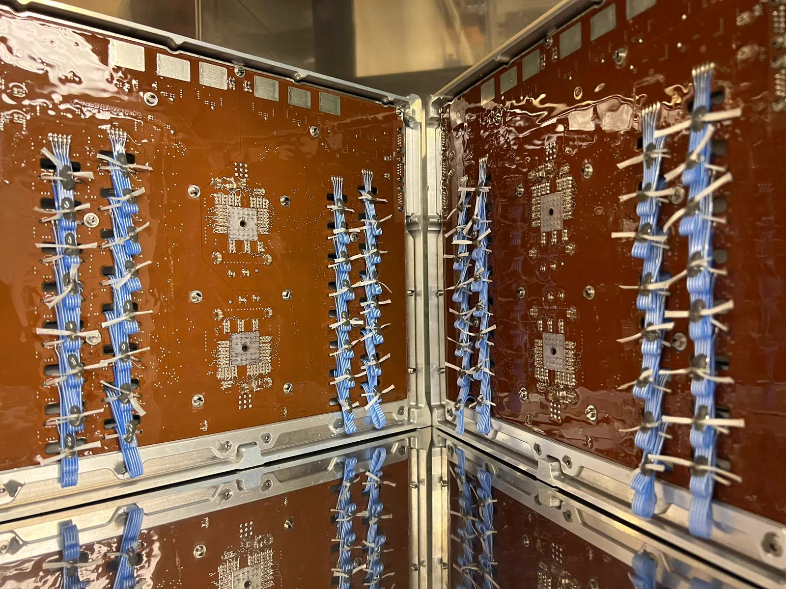
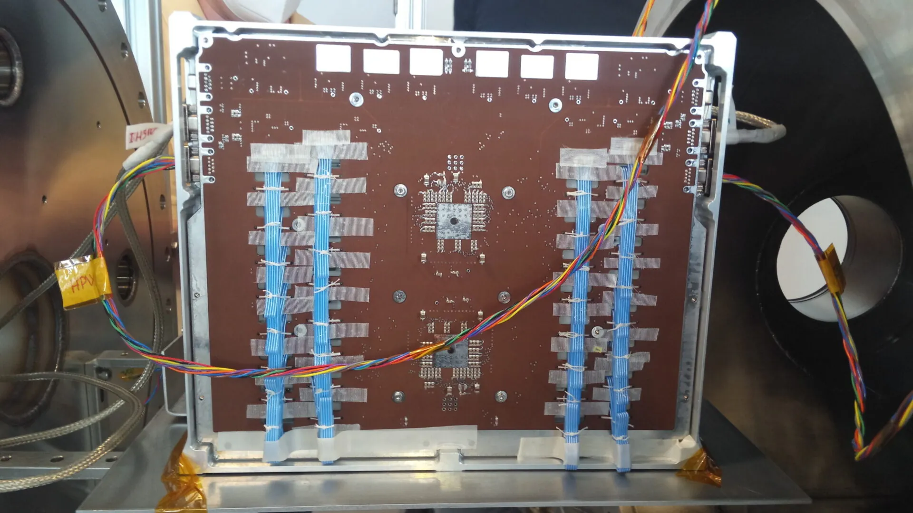

Kompletne systemy wysokonapięciowe zaprojektowane dokładnie według Twojej specyfikacji — obudowa, płyta sterująca i moduły WN dopasowane do misji.









I-Conomy projektuje i produkuje systemy wysokonapięciowe na zamówienie do zastosowań kosmicznych według specyfikacji klienta.
Zarówno obudowa aluminiowa, jak i elektroniczna płyta sterująca są wykonywane według dostarczonej specyfikacji. Moduły wysokonapięciowe w systemie mogą być standardowe z naszego katalogu lub wykonane na zamówienie.
Ceny i terminy dostaw są zawsze bardzo konkurencyjne.